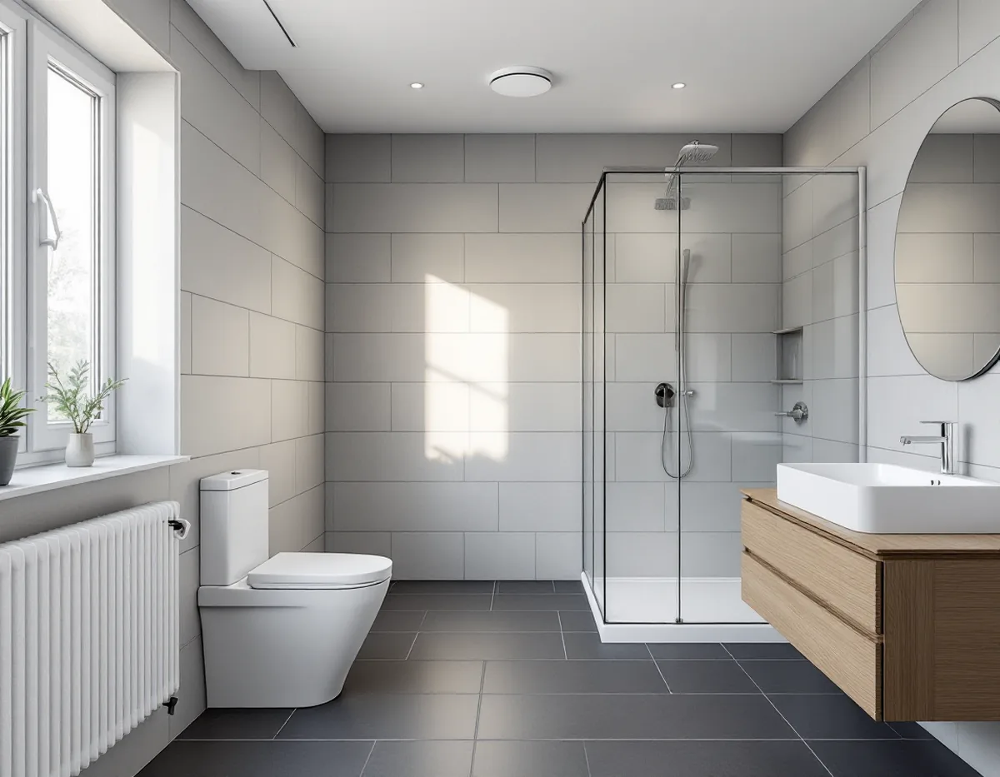
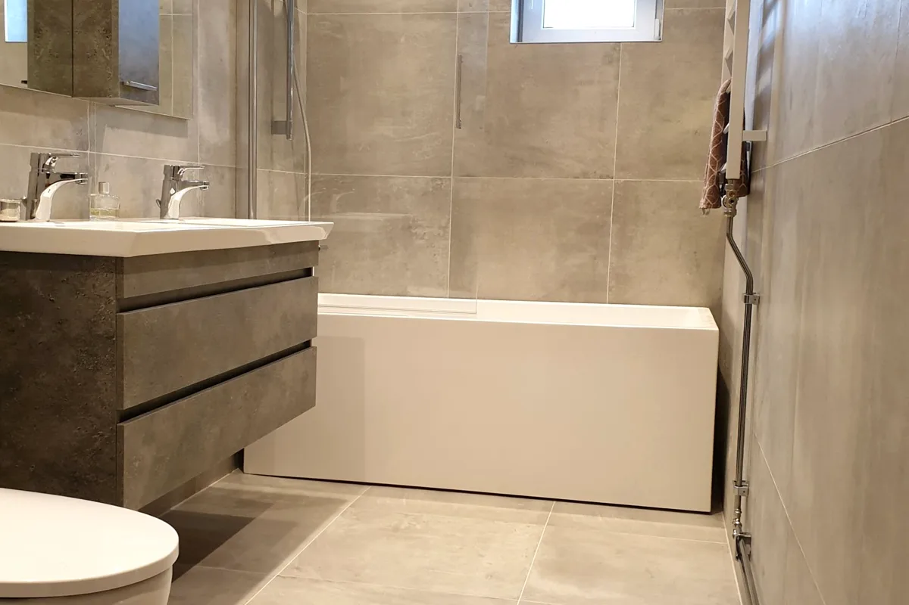

Platsbesök
Vi tittar på rummet, golvbrunnen, frånluften och var stammen går.
Ett badrum i Botkyrka kan ligga i en villa i Tullinge, ett radhus i Tumba eller en bostadsrätt i Hallunda, och reglerna skiljer sig mer mellan husen än man tror. Geal Entreprenad AB river, bygger tätskikt och ytskikt och samordnar VVS och el, och vi går igenom vad kommunen kräver innan ett badrum flyttas eller byggs om.

Botkyrka kommun skriver på sidan om flytt av kök eller badrum att en flytt inte är bygglovspliktig och ofta inte heller anmälningspliktig. Kommunen listar sedan när anmälan krävs. Det gäller håltagning i bjälklag om den berör bärande delar, ändring av bärande vägg, väsentlig ändring av ventilationen och väsentlig ändring av vatten- och avloppsinstallationerna. Är du osäker på om en håltagning påverkar bärande konstruktion bör en konstruktör bedöma det.
Kommunen ger exempel på gränsdragningen. En ny VA-stam i ett nytt schakt är en väsentlig ändring, medan en ny stam i befintligt schakt med samma placering inte är anmälningspliktig. Rördragning inom en lägenhet till befintlig stam är normalt inte anmälningspliktig, inte heller mindre håltagningar i en brandcellsgräns som tätas direkt i rätt brandteknisk klass.
I fastigheter med skyddsbestämmelse i detaljplanen eller med områdesbestämmelser gäller en utökad anmälningsplikt och eventuellt bygglovsplikt. Kommunen påpekar att delar av informationen på webbplatsen kan vara inaktuell sedan de nya bygglovsreglerna började gälla den 1 december 2025, så stäm av med kommunen innan arbetet planeras i detalj.

För ventilationen räknar kommunen installation eller byte av aggregat, fläkt, ventilationskanaler eller värmeväxlare som påverkar ventilationsflöden eller luftkvalitet som en väsentlig ändring. Att använda en befintlig frånluftskanal i ett badrum räknas däremot inte som väsentlig ändring och behöver inte anmälas. Flyttas badrummet bort från den gamla kanalen blir frågan därför större.
På kommunens sida om luft, ventilation och temperatur anges en rekommenderad relativ luftfuktighet inomhus på 30–70 procent, och kommunen skriver att för hög luftfuktighet kan orsaka fuktproblem och kvalster. Fukt tillförs bland annat från tvätt och från människorna i huset. Ett badrum där duschen används varje dag behöver en frånluft som klarar att föra bort fukten.
I ett hus eller radhus där golvbrunnen är från före 1990 ska den enligt GVK:s branschregler bytas vid renovering. När brunnen byts byggs golvet om runt den, och då görs fallet om samtidigt.
Ska huset anslutas till kommunalt vatten och avlopp beskriver kommunen stegen. Nybyggnadskartan visar förbindelsepunkten, där fastighetens ledningar ansluter till det allmänna nätet. När du vill att den fysiska förbindelsepunkten ska upprättas skickar du in en servisanmälan, och därefter tar det upp till åtta veckor. Du behöver också redovisa hur dagvattnet ska tas om hand, med en kort redogörelse och en geologisk undersökning.
Förbindelsepunkten ligger 0,5 meter utanför tomtgränsen. Därifrån och in i huset ansvarar du för arbetet. När det är klart begär du uppsättning av vattenmätare, och kommunens VA-enhet monterar mätaren när konsolen är på plats. Anslutningsavgiften ska vara betald innan anslutningen får användas.
Ett badrum som görs om samtidigt kan få nya ledningar fram till den nya anslutningen i stället för att de gamla förlängs, och mätarkonsolen kan placeras där den är lätt att nå.
Innan ett badrum flyttas är det bra att veta hur bjälklag och väggar är byggda. I Botkyrkas bygglovsarkiv kan du se och hämta handlingar, till exempel ritningar, från avslutade bygglovsärenden. Du når arkivet via en e-tjänst och behöver fastighetens adress eller fastighetsbeteckning. Pågående ärenden syns inte.
Kommunens utvecklingsprogram Framtid för Tullinge från 2010 beskriver förändringstrycket i Tullinge som högt och konstaterar att det byggs många bostäder i stadsdelen, mest spridda enskilda småhus. Ett nyare småhus och ett äldre hus kan alltså stå på samma gata, och därför börjar vi med ritningarna.
Om taken i kommunen finns mer under takläggare i Botkyrka, och om grunderna för tätskikt och fall under badrumsrenovering.
Vi tittar på rummet, golvbrunnen, frånluften och var stammen går.
Ritningar hämtas ur arkivet, och krävs anmälan tar vi fram underlaget.
Rivning, underlag, tätskikt, rör, el och ytskikt står som egna poster.
Golv och väggar öppnas, och bjälklag, brunn och rör bedöms innan något byggs.
Ny golvbrunn, fall och tätskikt; installatörerna drar rör, el och frånluft.
Klinker, kakel och porslin på plats; du får egenkontroll och skötselråd.
Avdraget är 30 procent av arbetskostnaden, högst 50 000 kr per person och år och högst 75 000 kr ihop med rutavdrag. Material och resor räknas inte.
I en bostadsrätt godkänner Skatteverket bland annat att byta golvbrunn, dra vatten- och avloppsledningar och sätta kakel och klinker. Stambyte, att flytta eller byta ut avloppsrör och att flytta golvbrunnen ger däremot inget avdrag. I villa och radhus räknas även att dra in och reparera vatten- och avloppsledningar. Geal drar avdraget direkt på fakturan.
Om badrummet ligger kvar eller flyttas, om bjälklag, stam eller ventilation berörs, om golvbrunnen behöver bytas och vilka ytskikt du väljer. Besöket är gratis, och du får ett skriftligt kostnadsförslag.
Tätskikt, golvbrunn, el, VVS och intyg.
Badrumsrenovering i Stockholm →Takbyte, takbesiktning och plåtarbeten.
Takläggare i Botkyrka →Tullinge, Uttran och Tumba.
Takrenovering i Botkyrka →Kartlagren, checklistan och vattnet.
Attefallshus i Botkyrka →Nytt hus, utfart och byggarbetsplats.
Byggföretag i Botkyrka →Fönstertyper per epok i Botkyrkas villor.
Fönsterbyte i Botkyrka →Kataloghus, källargolv och trägolv.
Golvläggare i Botkyrka →Kök i villor och radhus, för att bo kvar.
Köksrenovering i Botkyrka →Tidstypiska kulörer från 1960-tal till gamla byar.
Målare i Botkyrka →Rännor, stuprör och plåttak i Botkyrka.
Plåtslagare i Botkyrka →Altan, plank och förråd i villaområdena vid järnvägen.
Snickare i Botkyrka →Material, solpaneler och takkupor.
Takbyte i Botkyrka →Ny tapet på träfiberskivor och gamla lager.
Tapetsering i Botkyrka →